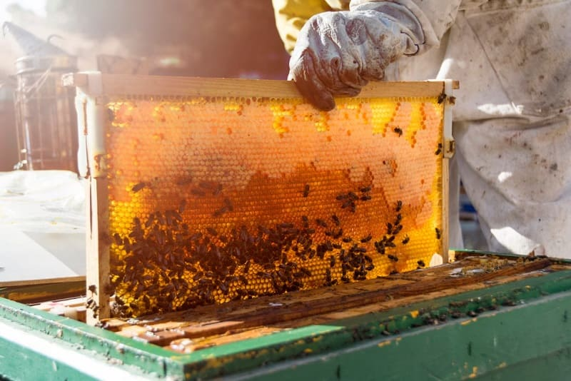

Cómo se Produce la Miel
Publicado el: 6 de noviembre de 2024
Recolecta del Néctar
Las abejas recolectoras comienzan su jornada visitando flores cercanas a su colmena. Utilizan su lengua larga y flexible para extraer el néctar dulce de las flores, que luego almacenan en su buche melario, una especie de "mochila" interna donde transportan el néctar sin digerirlo.
Durante el vuelo de regreso a la colmena, el néctar recolectado se mezcla con enzimas que comienzan a descomponer los azúcares complejos en azúcares simples como glucosa y fructosa, facilitando su posterior transformación en miel. Este proceso enzimático es esencial para garantizar que la miel sea estable y pueda conservarse durante largos períodos.
El Trabajo en la Colmena
Una vez de regreso en la colmena, las abejas recolectoras entregan el néctar a las abejas obreras más jóvenes. Este néctar pasa de una abeja a otra mediante un proceso conocido como trofalaxia, en el que las enzimas continúan trabajando para descomponer y reducir el contenido de agua del néctar.
Posteriormente, el néctar parcialmente procesado se deposita en las celdillas hexagonales de los panales. En este punto, las abejas ventilan intensamente las celdillas con el movimiento rápido de sus alas, lo que ayuda a evaporar aún más el agua del néctar, concentrándolo en una sustancia espesa que conocemos como miel.
Sellado y Conservación
Una vez que la miel alcanza la consistencia adecuada, con un contenido de agua inferior al 20%, las abejas sellan las celdillas con una fina capa de cera que producen en su abdomen. Este sellado hermético protege la miel de la humedad y los contaminantes externos, asegurando su conservación durante meses o incluso años.
El trabajo de sellado no solo asegura la frescura de la miel, sino que también ayuda a mantener su sabor y calidad. Este meticuloso proceso es un ejemplo asombroso de la organización y eficiencia dentro de una colmena.
Importancia para los Apicultores y el Ecosistema
Los apicultores desempeñan un papel crucial al cosechar la miel sin dañar a las abejas ni sus panales. Utilizan herramientas especializadas para recolectar los marcos de panal, extraer la miel y devolver los panales vacíos a la colmena, permitiendo que las abejas continúen su ciclo de producción.
Además de su valor económico, la producción de miel es esencial para la biodiversidad, ya que las abejas son responsables de la polinización de muchas especies vegetales. Sin su trabajo incansable, muchas frutas, verduras y flores no podrían existir.
Conclusión
La producción de miel es un proceso fascinante que combina biología, química y organización social. Cada gota de miel es el resultado del arduo trabajo de miles de abejas que cooperan para crear uno de los alimentos más puros y naturales del mundo. Al consumir miel, no solo disfrutas de sus beneficios para la salud, sino que también apoyas a los apicultores y al equilibrio del ecosistema.